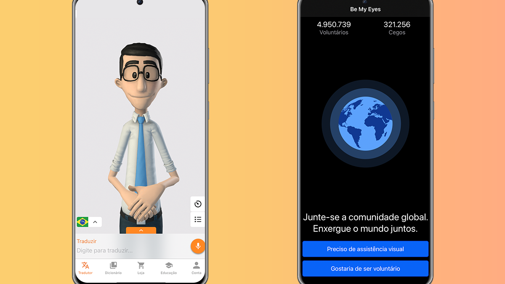

Aplicativos Novos que foram desenvolvidos para facilitar a acessibilidade à internet

A expressão acessibilidade Web refere-se a prática inclusiva de fazer websites que possam ser utilizados por todas as pessoas que tenham deficiência ou não. Quando os sites são corretamente concebidos, desenvolvidos e editados, todos os usuários podem ter igual acesso à informação e funcionalidade.
- WhatsCine
O WhatsCine torna o cinema acessível porque permite que as pessoas cegas escutem a audiodescrição do filme sem interferir com o áudio de outros espectadores. Permite aos surdos ver legendas e linguagem gestual através de óculos especiais, ou em seu smartphone. Graças a esta possibilidade, é incentivada a inclusão, o lazer compartilhado e o acesso para todos para a igualdade de cultura. O aplicativo também permite a transmissão de publicidade interativa pela sala, facilitando a promoção de futuros filmes e ofertas especiais relacionadas à sala e/ou seus patrocinadores. Agora também para televisão ou elementos audiovisuais na internet
- GuiadeRodas
O guiaderodas é um guia colaborativo destinado a avaliação e consulta de lugares acessíveis para pessoas com dificuldade de locomoção. Através de uma avaliação de no máximo 30 segundos e com uma abordagem jovem e otimista, o guiaderodas tem como objetivo promover a importância do tema e estimular todas as pessoas, com dificuldade de locomoção ou não, a avaliar a acessibilidade de diversos estabelecimentos. Entendemos que uma ideia quando é boa, é boa para todos.
- Hand Talk
O Aplicativo Hand Talk é um tradutor de bolso que é usado como um recurso de tradução para Libras, estreitando laços entre surdos e ouvintes. O App conta com a ajuda do Hugo, que além de traduzir conteúdos para Língua de Sinais. Hugo também está presente em uma sessão educativa chamada Hugo Ensina, com uma série de vídeos que ensinam crianças e adultos expressões e sinais em Libras. Muito mais do que um tradutor, o Hugo está aproximando pessoas através da tecnologia e da comunicação, sendo usado nos mais diversos ambientes.